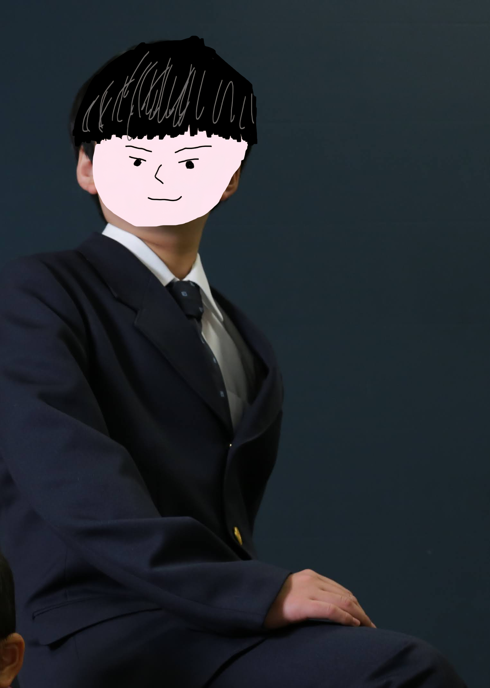

Mission / 活動目的
一つ、「藍空学園校長」として、その名を皆さんの脳裏に刻み込むこと。私が動くことで、学園の存在を世に知らしめる。それが私の使命です。
二つ、これは単なる作業ではない。私の人生を豊かにするための「究極の趣味」へと昇華させること。自分が一番楽しみ、その熱量を共有したいと考えています。
三つ、そして何より……「ずっとやろうと思ってたんだ、これ！」。構想数年、ついに重い腰を上げました。溢れ出る「やりたい」を形にする瞬間が、今ここから始まります。
About / 自己紹介

誕生日: 4月18日
性別: 男性
好きなこと: YouTubeを見ること
好きな食べ物: お寿司、ラーメン、ハンバーグ
趣味: お出かけ、写真を撮る
結構好きな有名人: 竹中 雄大さん、CABHEYさん、しぐれういさん
役職: 藍空学園 校長
YouTubeチャンネルを見るSchedule / 予定
※藍空学園高等学校・中学校兼用です。ご理解ください。